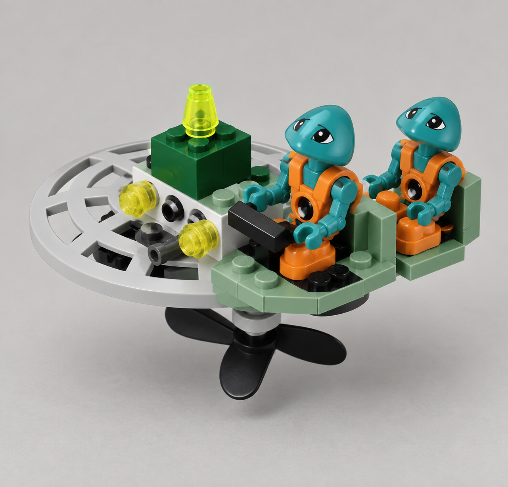

Production Design Target
ДЖЕРЕЛО → ІГРОВИЙ ВИГЛЯД

Ігровий Production Target. Відкритий корпус і зміщені джерельні вузли 1195 збережені; поруч із пілотом додано одне відкрите місце пасажира.

unit.martians.aero_skiff · Target mode: ADAPTED · виробничих моделей: немає../tools/verify.sh --targeted design-package плюс валідатор пакета. T084 — окреме рішення після схвалення цього вигляду.